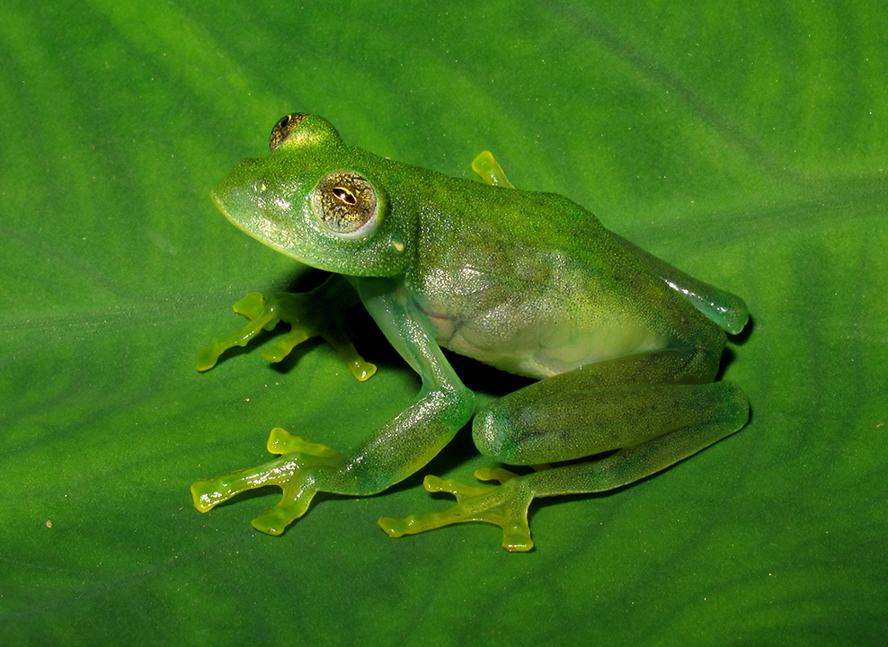
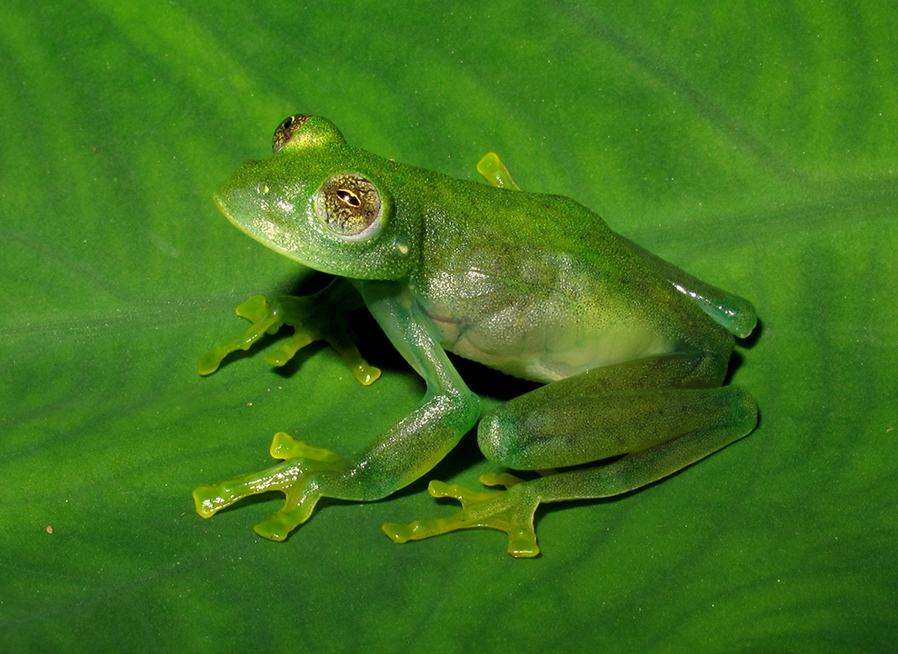

Espécie arborícola de áreas florestadas, ocorre no interior da Mata atlântica, próximo a riachos e águas claras e fundo rochoso, vocaliza nas margens destes corpos d'água, de cima das árvores e arbustos. Sua pele é muito fina e clara, por isso podemos enxergar os órgãos dentro da sua barriga. Graças a isso o seu nome, tanto científico quanto popular de rã-de-vidro/vitreorana. Os ovos são cercados por uma substância gelatinosa e adesiva e são colocados em folhas de árvores e arbustos nas margens dos riachos onde os girinos caem após a eclosão. Não possui veneno e foi registrada nos estados do RS, SC, PR, SP, MG, RJ e ES.
 
